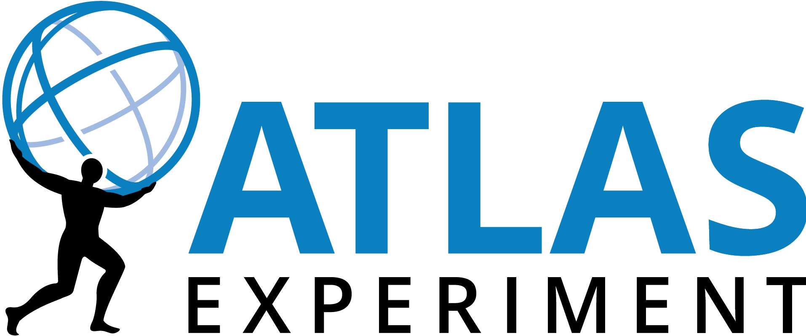

Quantum-Correlation Measurement
Density-matrix and polarization-sensitive observables in Higgs decays where missing neutrinos obscure the final-state geometry.
ATLAS Higgs Physics & ML Reconstruction
Research Focus

My research focuses on recovering physics information in Higgs final states with missing neutrinos, especially $H \to WW^* \to \ell\nu\ell\nu$. The scientific goal is to turn under-constrained events into observables that can test quantum correlations, polarization structure, and electroweak dynamics.
I build reconstruction methods with collaboration review in mind: physics-motivated constraints, stress tests against failure modes, reproducible training pipelines, and outputs that other ATLAS collaborators can inspect and reuse.
Research Thesis
The central problem is not simply to make a neural network predict better. It is to recover interpretable rest-frame information from incomplete collider events, validate it against physics expectations, and make the method credible enough for an ATLAS analysis environment.
At a Glance
Selected Evidence
Core Programs
Density-matrix and polarization-sensitive observables in Higgs decays where missing neutrinos obscure the final-state geometry.
Transformer and flow-based reconstruction pipelines constrained by physics expectations and systematic validation.
Collaboration-facing database tools for detector production data, quality checks, and visualization.
Fast Review